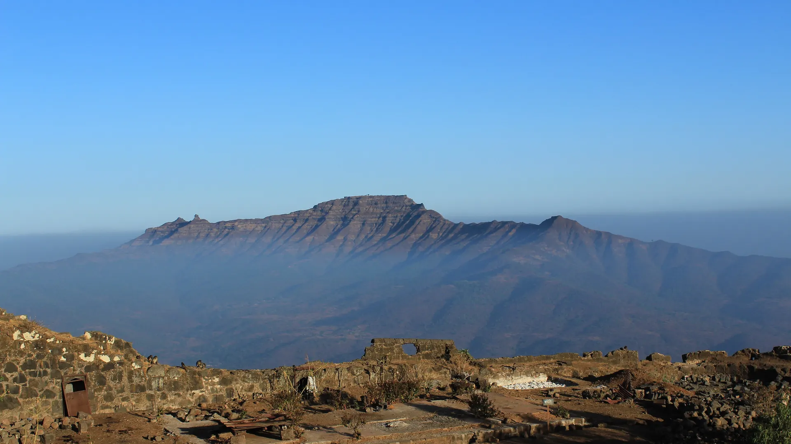
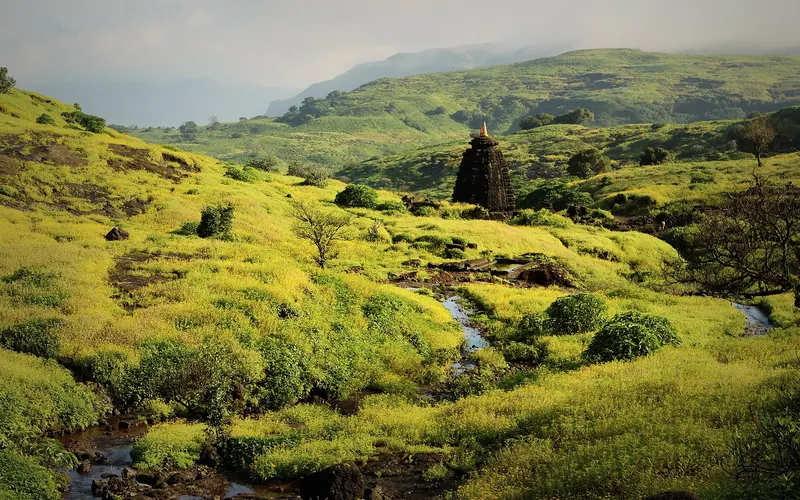

01Day 1 · Gunjavanekm 0.1
Up from Gunjavane
58kmFrom Pune · Bikat picks up at noon
Gunjavane is the base village below Rajgad. The path crosses fields, climbs through forest and reaches a plateau with a small shop.

Photo: Tokendra, CC BY-SA 4.0राजगड – तोरणा · Pune, Western Ghats
The trek in one line, and what you can do with it.
Two of Shivaji's forts, joined by one ridge, in the Sahyadri south-west of Pune.
6 stops on the map, then the climb. Scroll the stops and the map follows.
01Day 1 · Gunjavanekm 0.1
58kmFrom Pune · Bikat picks up at noon
Gunjavane is the base village below Rajgad. The path crosses fields, climbs through forest and reaches a plateau with a small shop.
01Day 1 · Padmavati machikm 3.0
~26yearsCapital for · Before Raigad
Rajgad was the first capital of the Maratha Empire for almost 26 years. Padmavati machi holds the Padmavati temple, water cisterns, tombs and storehouses.
01Day 1 · Balekilla · 1,376 mkm 4.2
1,376mRajgad · Wikipedia's figure
The Balekilla, the citadel, is a steep, slippery climb with fixed ropes, past the Maha Darwaja and the Chandrakor pond.
02Day 2 · Sanjivani machi · Alu Darwajakm 6.9
~2.5kmSanjivani wall · Double fortified
After breakfast the walk follows Sanjivani machi, a spur with a double wall about 2.5 km long.
02Day 2 · Torna · 1,403 mkm 16.5
1,403mTorna · Highest fort in Pune district
The ridge climbs to Torna, also called Prachandagad, the huge fort. Lunch is on top, then a couple of hours to explore the Mengai temple, Budhla machi and Zunjar machi.
02Day 2 · Velhekm 21.0
4pmDescent from · Bikat's plan
The path drops north off Torna to Velhe, the village at its foot, about 700 m up.
Best in Sep–Feb.
Dark: the months the trek’s sources call its best. Mid: possible. See all treks in September.
Base prices from 5 operators’ own pages, per person. GST and travel are often extra. Treqz sells nothing.
₹1,499–7,499
The practical things, then the questions people ask.
Buses run from Pune to Velhe, but not often. For Rajgad, get off at Margasani, 6.6 km from Gunjavane, and take a shared taxi.
Bikat Adventures: Rajgad guideTake any bus towards Satara, Kolhapur or Bangalore to Nasrapur, 36 km from Pune. Shared taxis and autos go on to Velhe.
Bikat Adventures: Torna guideThere is no signal in Gunjavane or on the climb. The Balekilla gets all major networks. On Torna a few bars of Airtel and Jio come and go.
Bikat Adventures: Rajgad guideSmall restaurants in Gunjavane serve food, pack lunches and refill bottles. A small shop on the plateau below Rajgad sells refreshments. Velhe hotels also pack food.
Bikat Adventures: Rajgad guideDon't swim in the fort tanks or put your feet in them. Local people drink from them.
Treks and TrailsCamp near or inside the Padmavati temple. Some Gunjavane hotels rent tents, and a few have basic rooms.
Bikat Adventures: Rajgad guideAbout 21.0 km of walking over 2 days on the trail.
The highest point is 1,403 m, about 680 m above the start.
Its sources grade it Easy–moderate.
Sep–Feb. It is also possible in Jun–Aug.
₹1,499 to ₹7,499 per person: base prices from 5 operators' own pages. GST and travel are often extra.
There is no signal in Gunjavane or on the climb. The Balekilla gets all major networks. On Torna a few bars of Airtel and Jio come and go.
Full-sleeve top, Full-length track pants, Warm jacket, cap and muffler, Extra clothes and a napkin, Sun cap, Trekking shoes with good grip, Proper backpack, Torch and spare batteries. The full list is on the 3D page.
Yes: Dec–Feb is among its best months.
Its sources grade it Easy–moderate and it takes 2 days on the trail, with a highest point of 1,403 m.
Rajmachi, Harishchandragad, Sandhan Valley, Kalsubai, Kudremukh.




Treks in September · Treks in October · Treks in November · Treks in December · Treks in the Western Ghats · Beginner Treks in the Western Ghats · Winter Treks in India · Easy Treks in India for Beginners · Weekend Treks in India (1–2 Days) · 2 Day Treks in India · Rajgad to Torna vs Rajmachi · Rajgad to Torna vs Harishchandragad · Rajgad to Torna vs Sandhan Valley · Free trek finder · All treks in 3D